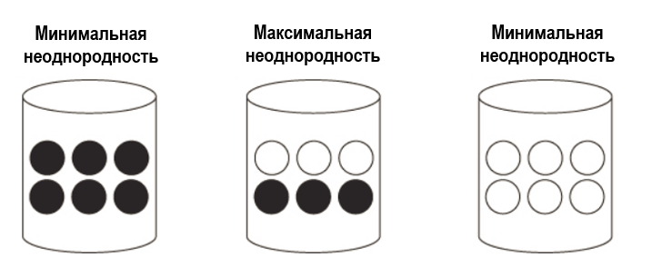
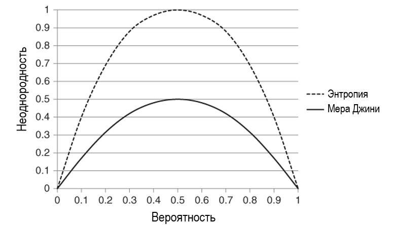

3 Построение деревьев решений CART с помощью пакета R rpart
3.1 Знакомство с методом CART
Алгоритм метода CART был опубликован в 1984 году в книге «Classification and regression trees» («Деревья классификации и регрессии»), авторами которой являются Лео Брейман (Калифорнийский университет в Беркли), Джером Фридман (Стэнфордский университет), Ричард Олшен (Калифорнийский университет в Беркли) и Чарльз Стоун (Стэнфордский университет).
Как уже ясно из названия, CART включает два вида анализа: деревья классификации для категориальных зависимых переменных и регрессионные деревья для количественных зависимых переменных. Эти виды анализа отличаются в деталях, но используют общий принцип.
CART выполняет последовательные бинарные разбиения данных на основе выбранного критерия. В отличие от CHAID, в CART для выбора предиктора расщепления не применяются статистические критерии. Вместо этого в каждом узле при расщеплении данных используется предиктор, обеспечивающий наибольшее улучшение по выбранному критерию. Ключевой элемент в методе CART – это отсечение ветвей дерева, известный под названием «отсечение с минимизацией стоимости-сложности» (minimal cost-complexity pruning). Деревья, построенные c помощью метода CART, имеют тенденцию быть слишком большими, а результаты не воспроизводятся с необходимой степенью устойчивости. Авторы метода пришли к выводу, что если разрешить построение максимально большого дерева, но затем отсечь его ветви, используя более сложный критерий, то в результате будет построено меньшее дерево лучшего качества. Построение дерева с последующим отсечением его ветвей стало основой метода CART.
3.1.1 Описание алгоритма
Алгоритм CART строит дерево, итеративно применяя к каждому узлу, начиная с корневого, процедуры выбора наилучшего расщепления предиктора, выбора наилучшего расщепления узла и остановки. В качестве критерия расщепления алгоритм использует уменьшение неоднородности при разбиении родительского узла на дочерние узлы (см. раздел 3.1.2. Неоднородность).
Этап 1. Выбор наилучшего расщепления предиктора
1. Алгоритм начинает с поиска наилучшей точки расщепления (разделяющего значения) для каждого предиктора. Для количественных и порядковых предикторов алгоритм выполняет сортировку значений в порядке возрастания. Затем алгоритм разбивает предиктор по всем возможным точкам расщепления (разделяющим значениям). Если имеются 6 различных значений возраста, они будут упорядочены и для них будет созданы 5 точек расщепления.
Например, есть значения возраста 18, 35, 20, 16, 11, 10. Они будут упорядочены: 10, 11, 16, 18, 20 и 35. Будет рассмотрено пять расщепляющих значений:
< 11 s ≥ 11
< 16 s ≥ 16
< 18 s ≥ 18
< 20 s ≥ 20
< 35 s ≥ 35Именно эта стратегия используется в пакете R rpart.
Для номинального предиктора его категории делятся всеми возможными способами на две группы.
В каждой возможной точке расщепления переменной вся выборка наблюдений гипотетически разбивается на два дочерних узла: левый и правый. Все наблюдения, у которых значение предиктора меньше точки расщепления, относятся в левый дочерний узел. Все наблюдения, у которых значение предиктора больше или равно точке расщепления, относятся в правый дочерний узел.
2. Алгоритм вычисляет уменьшение неоднородности для каждой точки расщепления.
3. В качестве наилучшей точки расщепления предиктора алгоритма выбирается точка расщепления, дающая наибольшее уменьшение неоднородности при разбиении родительского узла на дочерние узлы. Вышеописанные шаги повторяются для всех остальных переменных.
Этап 2. Выбор наилучшего расщепления узла
1. Из наилучших точек расщеплений предикторов, полученных на первом этапе, алгоритм выбирает точку расщепления, максимизирующую уменьшение неоднородности (проще говоря, из лучших расщеплений для каждого предиктоа выбирается наилучшее).
2. Алгоритм расщепляет узел, используя найденную для него наилучшую точку расщепления, если это позволяют правила остановки. Обратите внимание, что каждый предиктор может неоднократно использоваться для расщепления в ветви дерева. Например, может быть выполнено расщепление по переменной Возраст в значении 60 лет, а затем в узле-потомке снова может быть выполнено расщепление по этой переменной. Таким образом, могут моделироваться сложные зависимости между непрерывным предиктором и зависимой переменной, несмотря на то, что выполняются только бинарные расщепления.
Этап 3. Остановка
Алгоритм проверяет, нужно ли прекратить построение дерева, в соответствии со следующими правилами остановки.
1. Если узел стал однородным, то есть все наблюдения в узле имеют одинаковые значения зависимой переменной, узел не разбивается.
2. Если при выполнении разбиения уменьшение ошибки модели становится меньше порогового значения штрафа за сложность, процесс построения дерева останавливается.
3. Если количество наблюдений в родительском узле меньше заданного пользователем минимума наблюдений в родительском узле, узел не разбивается.
4. Если минимальное количество наблюдений в терминальном узле меньше заданного пользователем минимума наблюдений в терминальном узле, узел не разбивается.
5. Если текущая глубина дерева достигает заданной пользователем максимальной глубины дерева, процесс построения дерева останавливается.
ПРИМЕЧАНИЕ
В пакете R rpart с помощью ряда параметров вспомогательной функции rpart.control можно изменить некоторые вышеперечисленные правила остановки:
cpзадает штраф за сложность: если разбиение уменьшает ошибку модели на значение, меньшее порогового значенияcp, оно не принимается и дерево останавливается в росте;minsplitзадает минимальное количество наблюдений в родительском узле перед расщеплением, по умолчанию 20;minbucketзадает минимальное количество наблюдений в терминальном узле, по умолчанию используется округленное значениеminsplit/3;maxdepthзадает максимальную глубину дерева (количество уровней дерева, лежащих ниже корневого узла), по умолчанию равна 30.
3.1.2 Неоднородность
При построении дерева CART расщепляет узел на два дочерних узла по предиктору, который обеспечивает наибольшее уменьшение неоднородности. Для этого неоднородность родительского узла сравнивается со взвешенным средним значением неоднородностей дочерних узлов:
\[\Delta i=i_{P}-\left(\frac{n_{L}}{n_{P}}i_{L} + \frac{n_{R}}{n_{P}}i_{R}\right),\]
где
\(\Delta i\) – уменьшение неоднородности;
\(i_{p}\) – неоднородность родительского узла;
\(\left(\frac{n_{L}}{n_{P}}i_{L} + \frac{n_{R}}{n_{P}}i_{R}\right)\) – взвешенное среднее значение неоднородностей дочерних узлов:
\(n_{L}\) – количество наблюдений в левом дочернем узле;
\(n_{R}\) – количество наблюдений в правом дочернем узле;
\(n_{P}\) – количество наблюдений в родительском узле;
\(i_{L}\) – неоднородность левого дочернего узла;
\(i_{R}\) – неоднородность правого дочернего узла.
Применительно к дереву классификации CART под неоднородностью понимается неоднородность распределения классов зависимой переменной в узле. Однородным узлом является тот, в котором все наблюдения относятся к одному и тому же классу зависимой переменной, в то время как узел с максимальной неоднородностью содержит равное количество наблюдений во всех классах зависимой переменной. Допустим, есть узел, содержащий 6 наблюдений, относящимся к одному из двух классов. Максимальная неоднородность в узле будет достигнута при разбиении его на два класса по 3 наблюдения в каждом, а минимальная неоднородность – при разбиении на 6 наблюдений одного класса и 0 наблюдений другого класса.

Рис. 3.1. Примеры, иллюстрирующие минимальную и максимальную неоднородность
Наиболее популярная мера неоднородности для деревьев классификации – мера Джини. В основе меры Джини лежат возведенные в квадрат вероятности, с которыми наблюдения будут отнесены к каждому классу зависимой переменной.
Общая формула для вычисления меры Джини выглядит так:
\[Gini(t)=1-\sum^{K}_{k=1}p^{2}_{k},\]
где
\(K\) – количество классов зависимой переменной;
\(k\) – класс зависимой переменной;
\(p_{k}\) – вероятность \(k\)-того класса зависимой переменной в \(t\)-ом узле.
Для бинарной зависимой переменной мера Джини принимает вид:
\[Gini(t)=1-p^{2}_{1}-p^{2}_{0},\]
где
\(p^{2}_{1}\) – вероятность класса 1 (положительного класса) в \(t\)-ом узле;
\(p^{2}_{0}\) – вероятность класса 0 (отрицательного класса) в \(t\)-ом узле.
Когда наблюдения в узле равномерно распределены по категориям, мера Джини принимает свое максимальное значение (для бинарной зависимой переменной максимальное значение меры Джини равно 0,5). Когда все наблюдения в узле принадлежат к одному и тому же классу, мера Джини равна 0.
| Распределение в узлах | Мера Джини |
|---|---|
| Узел с распределением (1, 0) | Мера Джини = 1 – 12 – 02 = 0 |
| Узел с распределением (0,5, 0,5) | Мера Джини = 1 – 0,52 – 0,52 = 0,5 |
| Узел с распределением (0,7, 0,3) | Мера Джини = 1 – 0,72 – 0,32 = 0,42 |
Кроме меры Джини часто используется энтропия. Она вычисляется по формуле:
\[E(t)=-\sum^{K}_{k=1}p_{k}\times log_{2}p_{k}\]
Обе меры показаны на рис. 3.2, где можно четко увидеть, что энтропия (мера Джини) минимальна, когда все наблюдения либо принадлежат отрицательному классу, либо принадлежат положительному классу, и максимальна в случае одинакового количества наблюдений каждого класса.

Рис. 3.2. Сравнение меры Джини и энтропии для двух классов
Применительно к дереву регрессии CART под неоднородностью понимается степень разброса значений количественной зависимой переменной вокруг среднего значения в узле. Более точно, речь идет о среднеквадратичной ошибке – сумме квадратов остатков (разностей между фактическими значениями зависимой переменной и ее средним значением) в конкретном узле, поделенной на количество наблюдений в этом узле.
\[MSE(t)=\frac{1}{n_{t}} \sum_{i}(y_{it}- \bar{y_{t}})^2,\]
где
\(y_{it}\) – фактическое значение зависимой переменной для \(i\)-того наблюдения в t-ом узле;
\(\bar{y_{t}}\) – среднее значение зависимой переменной для в \(t\)-ом узле;
\(n_{t}\) – количество наблюдений в t-ом узле.
3.1.3 Метод отсечения ветвей на основе меры стоимости-сложности с перекрестной проверкой
При использовании критерия неоднородности для построения дерева возникает следующая проблема. Увеличивая размеры дерева, почти всегда можно уменьшить неоднородность. Любое дерево будет иметь нулевую неоднородность, если оно построено достаточно большим. В частности, если в каждом терминальном узле имеется только одно наблюдение, то неоднородность равна нулю. По мере увеличения размеров дерево становится более сложным, а ошибка модели на обучающей выборке уменьшается вплоть до 0, когда каждое наблюдение находится в отдельном узле. Но такая ситуация чревата переобучением, когда на новых данных качество модели будет гораздо хуже полученного на обучающей выборке. В итоге, несмотря на высокий процент правильных прогнозов на обучающей выборке, большие деревья могут обладать плохой обобщающей способностью. Поэтому необходимо найти баланс между сложностью и ошибкой модели.
Для решения этих проблем разработчики CART ввели меру стоимости-сложности, которая включает штраф, возрастающий с увеличением размера дерева. Эта функция для дерева (или его ветви) обычно выражается как \(R_{\alpha}=R(T)-\alpha \lvert T \rvert\), где \(R(T)\) – ошибка модели, рассчитанная по тем же данным, по которым строилось дерево; \(\alpha\) – коэффициент штрафа; \(\lvert T \rvert\) – количество терминальных узлов дерева (или ветви) \(T\).
Дерево большего размера будет иметь большую меру стоимости-сложности за счет слагаемого \(\alpha \lvert T \rvert\). Для того, чтобы мера стоимости-сложности улучшилась, ошибка модели («стоимость» ошибки) должна уменьшиться на величину, большую, чем штраф за сложность (в пакете R rpart штраф за сложность регулируется гиперпараметром cp).
Мера стоимости-сложности была протестирована в качестве критерия построения дерева, однако авторы (Брейман, Фридман и др.) констатировали, что построенные таким способом деревья все еще не вполне удовлетворительны – они недостаточно стабильны. Решение этой проблемы привело, в свою очередь, к методу отсечения ветвей на основе критерия максимального уменьшения меры стоимости-сложности (cost-complexity pruning). Его суть сводится к следующему. Сначала строим максимально большое дерево (с небольшим числом наблюдений в узлах – от 1 до 5). Затем отсекаем у него ветви на основе меры стоимости-сложности. Выбираем простейшее дерево с наименьшим числом узлов, ошибка которого находится в пределах одной стандартной ошибки от минимальной ошибки, достигнутой на этапе построения дерева. В качестве ошибки для дерева классификации берется ошибка классификации, а для дерева регрессии таковой будет среднеквадратичная ошибка.
В дальнейшем этот метод был вновь усовершенствован авторами. В ходе экспериментов было установлено, что управление отсечением и отбор модели необходимо осуществлять, оценивая качество модели не на обучающей выборке, а на контрольных блоках перекрестной проверки (Лео Брейман рекомендовал использовать 10-блочную перекрестную проверку). Мы выбираем дерево, которое дает наименьшую кросс-валидационную ошибку. Кросс-валидационной ошибкой является ошибка классификации (для дерева классификации) или среднеквадратичная ошибка (для дерева регрессии), усредненная по всем контрольным блокам перекрестной проверки. Метод отсечения на основе меры стоимости-сложности с перекрестной проверкой как раз и реализован в пакете rpart.
3.1.4 Обработка пропущенных значений
В методе CART пропущенные значения обрабатываются с использованием переменных-суррогатов. Таким образом, если наблюдение имеет пропущенное значение в переменной, по которой осуществляется разбиение узла, то для выбора дочернего узла, к которому относится данное наблюдение, используется его значение для наилучшей переменной-суррогата. Наилучшей переменной-суррогатом является альтернативная предикторная переменная, дающая наиболее близкое (с использованием меры связи) разбиение к тому, которое дает исходный предиктор.